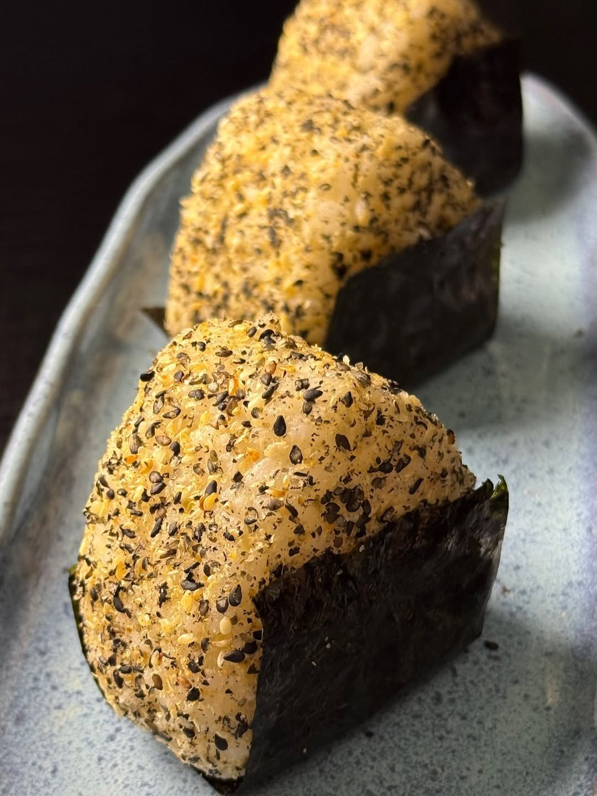

Início · Onigiri
Onigiri, a novidade da casa
Chegou em agosto de 2026 e, nas palavras da casa, “virou HIT”. Unidade de 100 g, dupla, trio e a versão hot, empanada no panko e frita.
Amor In SushiSushi de bairro · delivery e retirada no balcão
O que vai dentro
Shari, Kewpie e gergelim
“Shari com uma combinação deliciosa de maionese Kewpie, gergelim torrado e proteína da sua escolha, realçada com óleo de gergelim e finalizada com cebolinha.”Cardápio do Amor In Sushi

Proteínas
Seis sabores, cada um também dragon
Atum grelhadoCamarãoCamarão empanadoKaniSalmão grelhadoTartar de salmão fresco
Todas as proteínas têm a versão DRAGON (apimentada). O recheio é cream cheese ou maionese Kewpie.
Tamanhos
Para um ou para dividir
Pedir
Diga a proteína na mensagem
Toque em “+” acima e, na mensagem do WhatsApp, diga a proteína e o recheio de cada onigiri.
Pedir onigiriDúvidas frequentes
Perguntas comuns
Qual a diferença do onigiri hot?
É empanado no panko e frito; a unidade tem 150 g.
Acompanha molho?
Cada onigiri vem com um sachê à escolha: shoyu, tarê ou agridoce.
Peça agora
Escolha as peças, a gente cuida do resto.
Delivery para mais de 150 bairros de Salvador ou retirada no balcão da Rua da União, na Mata Escura. O pedido chega pronto no WhatsApp da casa.